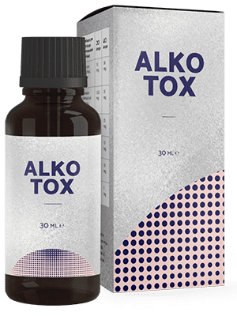
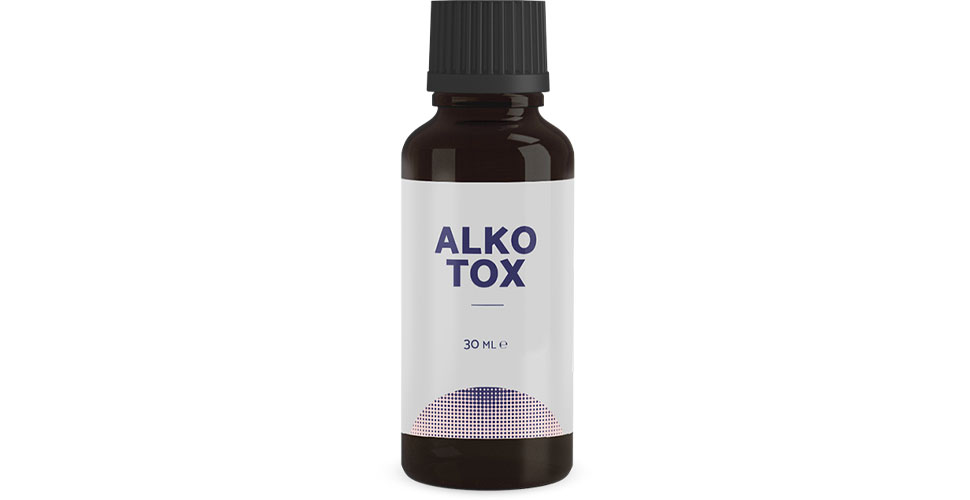

Kā ārsts-narkologs apgalvoju, ka atmest dzeršanu var ikviens
Vairāk par 20 gadiem es strādāju par narkologu lielā klīnikā. Visas manas prakses laikā spēju palīdzēt milzīgam cilvēku skaitam cīņā ar atkarību. Daudziem es burtiski izglābu dzīvību, un es nekad nebūtu domājis, ka mans dēls būs starp viņiem. Ilgu laiku es nevarēju palīdzēt viņam ar man pazīstamiem veidiem un gandrīz zaudēju cerību. Man izdevās atrast jaunu metodi. Tagad es gribu izstāstīt visiem, kā atbrīvoties no atkarības un nekad vairs neatgriezties pie alkohola.

Atskatoties atpakaļ, es redzu, ka klīnika, pacienti, semināri un kongresi bija svarīgāki, nekā paša ģimene. Es pilnībā atdevos citiem cilvēkiem, aizmirstot par savu dzīvi. Iespējams, tāpēc dēls kļuva par manu pacientu – no zemapziņas vēlmes būt man tuvāk. Grūtības ģimenē un domstarpības starp tuviniekiem ir viens no galvenajiem alkoholisma iemesliem. Un tikai tad nāk problēmas ar darbu, naudu, attiecībām ar cilvēkiem, psiholoģiskās un fizioloģiskās novirzes.
Es un mana sieva darījām visu, lai dotu dēlam labu izglītību un pienācīgu dzīvi. Tikai tagad es saprotu, ka viņam trūka manas uzmanības. Tāpēc koledžā viņš pamēģināja alkoholu un nevarēja apstāties. Vispirms viņam izdevās slēpt problēmu ar alkoholu...
Es atceros to dienu, kad man piezvanīja un atvēra acis. Vēl pirms pusgada dēlu atskaitīja un viņš sāka dzert katru dienu. Un tālāk sliktāk – pameta meitene, piedzērušies kautiņi bāros, amorāla uzvedība, un pirmās problēmas ar likumu. Un to visu es nezināju, un pat nenojautu...

Priekšā mūs gaidīja divi sarežģītas rehabilitācijas gadi. Es darīju visu, lai viņam palīdzētu. Dēls ārstējās, tīrīja asinis, izgāja psihoterapijas kursus. Pēc laika bija tadzami uzlabojumi. Viņu izrakstīja un viņš uzreiz devās uz bāru. Pats šausmīgākais bija ne cilvēku ņirgas, ka es esmu slikts narkologs un nevaru izārstēt savu paša dēlu, bet tas, ko es tiešām biju bezspēcīgs un mans bērns ik dienu indē sevi un sagrauj savu dzīvi.
Ar laiku psihologs palīdzēja uzlabot mūsu attiecības. Dēls atzinās, ka vairs nedusmojas uz mani. Vienkārši atmest dzeršanu nav viņam pa spēkam. It kā kāds liek to darīt, un viņš nevar apstāties. Proti, problēma bija nevis psiholoģiskā, bet tieši fiziskā atkarība, no kuras nekādi nesanāca atbrīvoties. Protams, es zināju, ka tā mēdz būt. Tradicionālās ārstēšanas metodes, kas tiek praktizēts visā pasaulē, nepalīdzēja... Un es sāku meklēt citu, nelīdzīgu nekam citam metodiku.

vienā no tiešsaistes konferencēm pēdējais uzstājās nezināms līdz šim narkologs par man vajadzīgo tēmu. Jaunais līdzeklis, kas parāda izcilus statistikas datus par izārstēšanos no alkoholisma, ir jau pievienots terapijai kaimiņu valstīs.

Tātad, ko es uzzināju. nesatur blokatorus, trankvilizatorus un citas ierastās vielas. Tā sastāvā iekļauti dabīgi ekstrakti, kas veic galvenās funkcijas terapijā no alkohola atkarības:
- izstrādā dabisku noraidīšanas reakciju uz alkoholu;
- uzlabo domu un runas iespējas;
- noņem abstinences sindroma simptomus;
- uzlabo emocionālo stāvokli, neitralizējot agresijas un depresijas pazīmes;
- attīra asinis un asinsvadus;
- izvada toksiskās vielas no organisma.
Man kā speciālistam ar samērā lielu darba stāžu, bija grūti noticēt.Šādu efektu nevar panākt ne ar vienu preparātu, tikai ar kompleksu darbu. Tā kā visas pazīstamās metodes, es jau izmēģināju, un tās nepalīdzēja, es nolēmu iedot dēlam .
Mans dēls, jau divas nedēļas bija plostā. No rīta, lai noņemtu paģiru sindromu, es viņam iedevu . Pēc stundas viņš pieņēma dušu un atnāca brokastot. Pirmo reizi pa ilgu laiku viņš nejutās slikti. Un tiešām, viņa rokas netrīcēja, balss bija mierīga, acu zīlītes normālas. Nekādu paģiru pazīmju. Viņš pat jokoja un smaidīja, it kā vakar nemaz negulēja piedzēries paša vēmekļu peļķē…

Pēc divām preparāta lietošanas nedēļām dēls nenorāvās, un veda normālu dzīves veidu. Dēls izgāja pārbaudi, un viņa analīzes mani pārsteidza – visi rādītāji normā, asinis bez toksīniem un piemaisījumiem. Un pats galvenais, dēls pārstāja dzert. Uz ilgu laiku? Izrādījās, ka jā.
Vēl vienu nedēļu vēlāk viņš atzinās, ka neticēja, ka jaunā ārstēšana palīdzēs, sāku lietot tikai manis dēļ. Un pēc tam vienkārši pārstāja domāt par to, ka grib dzert. Parādījās pozitīvas domas, pats stāvoklis kļuva labāks. Pat sāka plānot atrast darbu un atgriezties pie mācībām nākamajā gadā.
Pagāja pusgads, kopš mans dēls dzēra . Pa šo laiku viņš ne reizi nepieskārās alkoholam un atgriezās pie normālas dzīves.Tagad es palīdzu pat tiem, kurus uzskatīju par bezcerīgiem pacientiem. Man izdevās nodibināt piegādes mūsu valstī. Un pat vairāk! Tagad to var pasūtīt ikviens interesents tieši ražotāja mājas lapā bez uzcenojumiem un muitas nodevām.

Ja jūs paši vai tuvinieki nevar atbrīvoties no atkarības un praktiski jau ir zaudējuši cerību... Ziniet, izeja ir vienmēr! Es pats nesen biju jūsu vietā, lai gan domāju, ka sakarā ar manu specialitāti, tas nekad nenotiks. Dzīvē mēdz būt dažādi apstākļi. Es zinu, cik cilvēki tērē uz rehabilitāciju. Vairumā gadījumu tik lielas summas nav pieejamas 85% pacientu. Es vēlos palīdzēt ikkatram un dāvinu 50% atlaidi uz . Iegādājoties šo līdzekli, jūs uz visiem laikiem atvadīsieties no alkohola.